CHAPTER 5
Taking Care of
Teeth and Gums
We can prevent most tooth and gum problems. This chapter gives more information about how teeth grow in and how to keep teeth and gums healthy. Share this information and you will prevent problems from starting.
But remember that people are most interested in the problems they have now. Before listening to what you know about prevention, people will want treatment for the problems that are already causing them pain and discomfort.
Early treatment is a form of prevention.
It can prevent a tooth or gum problem from becoming more serious.
When you treat a person’s problem, it shows that you care about him. It also shows that you know what treatment he needs. As his confidence in you grows, he will want to learn from you about preventing tooth or gum problems.
In order to help a person it is important to know what the problem is and what is the best treatment. But just as important is knowing what you are not able to do, and when to seek help.
In this chapter, you will learn more about teeth, gums, and problems affecting them, but you must never be too proud to get help from more experienced dental workers.
Know your limits.
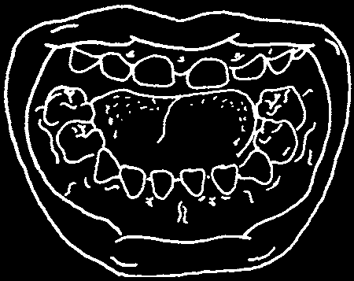


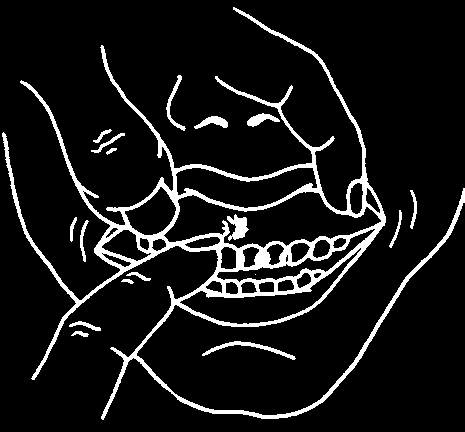
TAKING CARE OF BABY TEETH
A child’s baby teeth are being made before birth while the baby is still inside the mother’s womb. During the last months of pregnancy and the first few months after the child is born, the baby teeth take their final form. Pregnant mothers and young children need good food and good health in order to have strong baby teeth.
Strong teeth
Weak teeth are white and their have yellow marks that front surface is smooth.
are pitted and rough.
Baby teeth get marks on them when: 1) the pregnant mother is sick or does not eat good food; 2) the young baby is sick or does not eat good food; or, sometimes, 3) the baby’s birth was early or the delivery was difficult.
The marks are rougher than the rest of the tooth. Food sticks easily to them and turns the tooth yellow.
The marks are also soft. They need to be cleaned well every day (p. 63) to prevent them from becoming cavities. A tooth with a cavity hurts. When children’s teeth hurt, they do not want to eat as much.
Cavities in baby teeth can make a child’s malnutrition worse.
remember this whenever you see a weak, poorly nourished child. When you examine a child at the health clinic, lift his lip and look at his teeth. Do this as part of your routine examination.
You can fill cavities with cement (Chapter 10).
Cement prevents food and air from going inside the cavity and hurting the child.
A sore on the gums may be a gum bubble. If so, it means the tooth has an abscess (page 81).
That cavity should not be filled with cement.
Instead, the tooth needs to be taken out
(Chapter 11) before the infection can get worse.

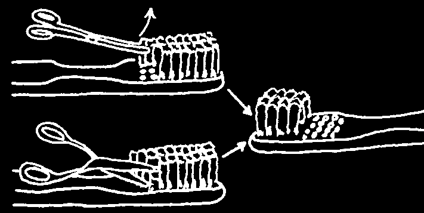
For baby teeth to grow strong, mother and baby must stay healthy.* Help her to understand how important this is. A pregnant mother should:
• Eat enough good kinds of foods, both for herself and her baby growing inside (page 68; also see Where There Is No Doctor, Chapter 11, and
Helping Health Workers Learn, pages 25-39 to 25-44.)
• Attend health clinic each month, so the health workers can examine her regularly and she can receive important medicines (see Where There
Is No Doctor, page 250).
• Not use the medicine tetracycline, because it can cause the teeth to turn dark. You, the health worker, must remember—do not give tetracycline to a pregnant woman or to a young child. If she needs an antibiotic, use a different one.
For baby teeth to stay strong, and to prevent marks from turning into cavities, mother should:
• Continue to breast feed and never feed her child juice or sweet tea from a bottle. Start adding soft foods, such as mashed banana or papaya, when the child is 6 months old.
• Wipe her baby’s teeth with a clean cloth after the baby eats. This cleans the baby’s teeth, and helps the baby get used to teeth cleaning.
Later he will be happy with a brush.
Around 1 year of age, there will be several baby teeth. At that time, mother should start using water—not toothpaste—on a soft brush or brushstick.
(With toothpaste, you cannot see the child’s teeth clearly because of the bubbles it makes.) She should scrub the sides and tops of each baby tooth as well as she can (page 69).
The child can also try to clean his own teeth. That should be encouraged.
However, since he is too young to clean properly, mother (or father, or older brother, sister) must clean his teeth once a day for him. Continue helping in this way until the child is old enough to go to school.
You can make a large brush smaller, to fit more easily into a young child’s mouth.
Pull out some of the back hairs, or cut them out with scissors. Do not cut the hairs in half, because the tops are often rounded or softer, and that is better for the gums.
*See the story about pregnancy and dental care on pages 15–16.
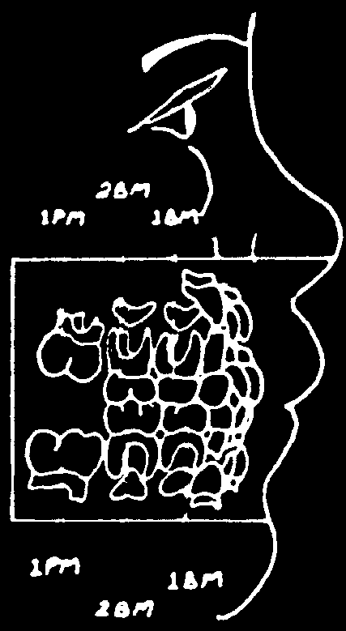
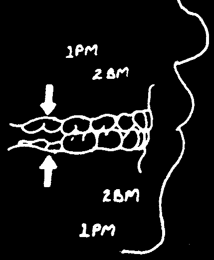

Why Baby Teeth Are Important
Baby teeth are just as important to children as permanent teeth are to adults.
They help a child to eat, talk, and look good.
However, many people feel that it is not worth the effort to look after baby teeth. Nor is it worth fixing them. After all, parents think, the permanent teeth will take their place.
This kind of thinking is understandable. The problem is that we are forgetting one other useful purpose of baby teeth. Baby teeth keep space in the mouth for the permanent teeth to grow in. If there is not enough space, the new teeth will grow in crooked, and cavities grow faster around crooked teeth.
Permanent
Under each baby tooth a new molars permanent tooth is growing.
(PM) come
At the same time, extra in behind the baby permanent molars are forming molars at the back of the mouth,
(BM).
inside the bone (page 43).
Front baby teeth become loose and fall out (usually
6–7 years, but sometimes as young as 5 years) ahead of back baby teeth (10–12 years).
This is because the front permanent teeth are formed and ready to grow in first.
The permanent molar (1 PM) is often the first of the permanent teeth to grow into the mouth. That happens at 6 years of age.
The first permanent molar grows into
Slowly but steadily the upper and the mouth by sliding against the back lower permanent molars grow until of the second baby molar (2BM).
they meet and fit tightly together.
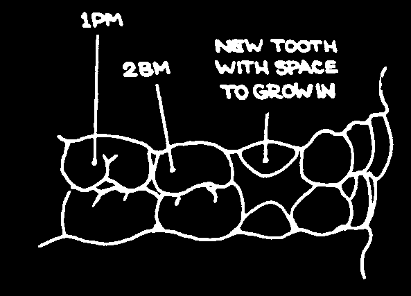
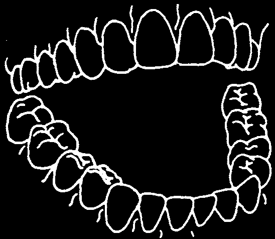

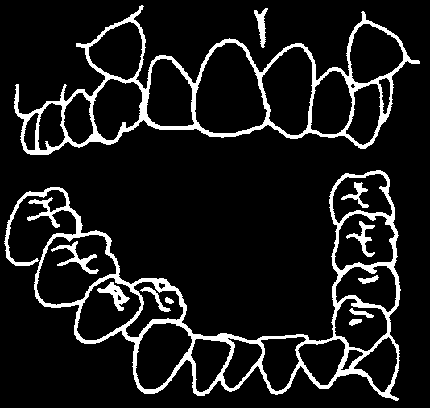
Between the ages of 6 and 11, a child needs healthy baby molars to guide the first permanent molars into position and then to hold them there. When the first permanent molars grow into the right place, this is a good sign. It means the other permanent teeth will also grow in properly, because they will have enough space.
Note: Some people are born without enough space. But most people are not born with this problem—they lose the spaces when they remove baby teeth instead of fixing them.
help
HEALTHY BABY TEETH
t o make
STRAIGHT PERMANENT TEETH
10 years adult help
SICK BABY TEETH
to make
CROOKED PERMANENT TEETH
10 years adult
Tell mothers why baby teeth are important. Good food and regular cleaning keep them healthy. They should know that new teeth coming in do not cause diarrhea and fever, but that a child may have diarrhea or fever at the same time.
If there is a cavity, fix it so the tooth can be kept in the mouth to do its important work (see Chapter 10).

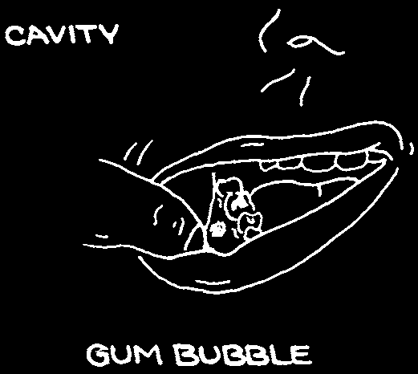


TAKING CARE OF MOLAR TEETH
We often notice front teeth growing in, but not the back ones. Back teeth molars are not so obvious. Swelling on the face can be either a new molar growing in or an abscess. So, to help you to decide, look at the tooth for a cavity and at the gums beside it for a gum bubble.
When you see a swollen face, look for the two signs of an abscess.
But if the person is young (16–22 years), it often is not an abscess. The third permanent molar tooth may be growing in at the back of her mouth. As the tooth grows, it cuts through the skin. Just as a dirty cut on a person’s hand can get infected, the cut gum around her new tooth also can get infected, causing a swollen face.
See the red swollen skin on
Look behind her back teeth.
top of the new tooth.
If there is enough space for the tooth, it will grow in by itself. It only needs time. Before acting, decide how serious the problem is.
If there is no swelling and she can open her mouth, explain to her what is happening and what she can do herself to reduce infection and toughen the gums. The best medicine is to rinse warm salt water over the sore area.
A good home remedy is to rinse until the tooth grows all the way into the mouth.
If it does appear serious (severe pain, swelling, not able to open the mouth), see page 94 for further treatment.
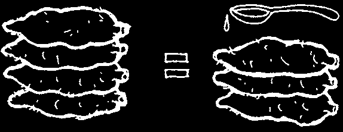
TAKING CARE OF ALL YOUR TEETH
This book often repeats an important message: eat good food and clean your teeth. It is repeated because this is the most important thing you can Iearn from this book. Later chapters will discuss what to do when problems occur, but if you follow these two suggestions, you will almost never have problems with your teeth and gums. This is true because good food keeps your whole body healthy, including your teeth. Also, with no
'colonies’ of germs (page 50) or harmful factory sugar (page 55) on your teeth, your mouth cannot make the acids that cause both tooth and gum problems. So, remember:
1. Eat Good Food
An easy-to-remember rule is the same foods that are good for the body are good for the teeth. A healthy body is the best protection against infection.
Good nutrition (eating well) means 2 things:
1) Eat a mixture of different kinds of foods every time you eat. Look at the pictures on page 55. There are several groups of foods. Every time you eat, try to eat one or two foods from each of the groups. This way, you will get 3 important kinds of food:
grow food (body-building food) to give you the protein you need; glow food (protective food) to give you vitamins and minerals; and
The MAIN FOOD is at go food (concentrated energy food) to give the center of every meal.
you calories to be active all day.
2) Be sure you eat enough food to give your body the energy it needs. This is even more important than the first suggestion. We get half or more of our energy from our main food. In most parts of the world, people eat one low-cost
A spoonful of cooking oil energy food with almost every added to a child’s food meal. Depending on the area, means he only has to eat about ¾ as much of the this main food may be rice, local main food in order to maize, millet, wheat, cassava, meet his energy needs. The potato, breadfruit, or banana.
added oil helps make sure
The main food is the central or he gets enough calories by
'super’ food in the local diet.
the time his belly is full.

Be sure always to eat grow foods and glow foods to get the vitamins and protein you need.
Your energy foods give you the most important part of your diet—calories.
Half or more of our calories come from the main food, and most of the other calories come from go foods.
WARNING ABOUT GO FOODS: Although go foods give us the energy we need, some go foods are worse than others. Honey, molasses, and especially white sugar can be very bad for the teeth, even though they have the calories we need. Fruits, nuts, and oils all give us energy (calories)
without attacking the teeth.
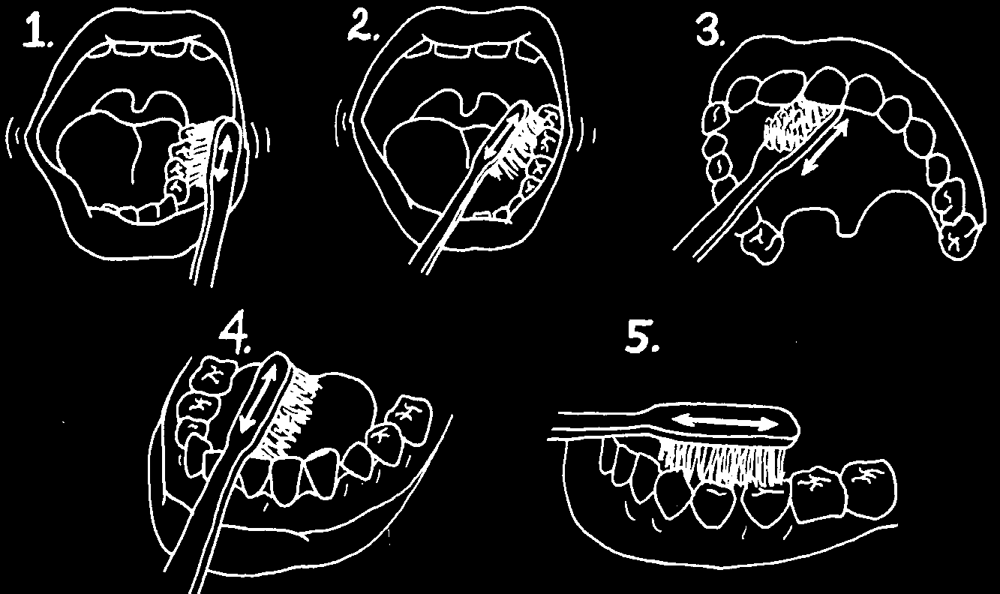
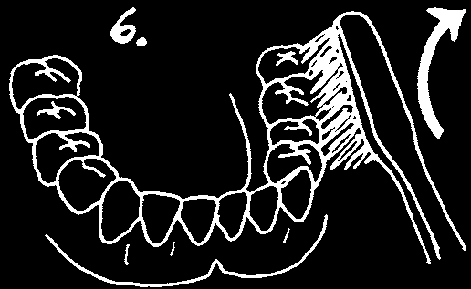
2. Clean Your Teeth
Cleaning teeth requires time and care. If you hurry, you will leave food and germs behind, and they continue to make cavities and sore gums.
You may find that different dental workers recommend different ways of brushing teeth. Some ways are definitely better, but often they are harder to learn.
Teach a method of cleaning that a person can learn and will do at home.
Let him start by scrubbing his teeth (and his children’s teeth) back and forth, or round and round. Encourage him to improve his method only when you think he is ready.
Toothpaste is not necessary. Some people use charcoal or salt instead. But it is the brush hairs that do the cleaning, so water on the brush is enough.
Scrub the outside, inside, and top of each tooth carefully.
When you finish, feel the tooth with your tongue to make sure it is smooth and clean.
Finally, push the hairs of the brush between the teeth and sweep away any bits of food caught there. Do this for both upper and lower teeth.
Sweep away in the direction the tooth grows: sweep upper teeth down and lower teeth up.

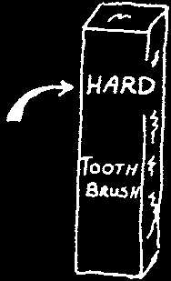

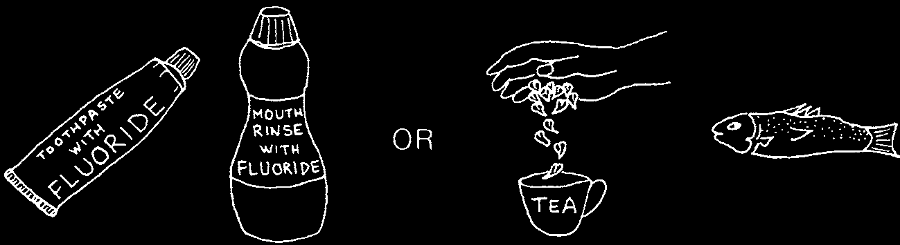
Explain how important it is to use a brush with soft hairs. A brush that is stiff and hard will hurt the gums, not help them.
YES
NO
You can make a hard brush softer by putting the hairs into hot water for a few minutes.
Do not put the plastic handle into the hot water, or it will melt.
If your store has only hard brushes, tell the store keeper that hard toothbrushes do not help the people in the community. Ask him to order and sell only soft toothbrushes.
Note: Another important way to reduce cavities is by adding fluoride to teeth. Fluoride is a substance which, like calcium, makes teeth harder and stronger.
Fluoride in drinking water, toothpaste, salt, vitamins, and mouth rinses helps to prevent cavities. These methods are sometimes expensive. But treating teeth once a week with fluoride toothpaste is effective and inexpensive. See page 205.
Fluoride can also be found naturally in food and water. For example, tea leaves and most foods from the sea contain a large amount of fluoride.
So, your source of fluoride can be either:
OR

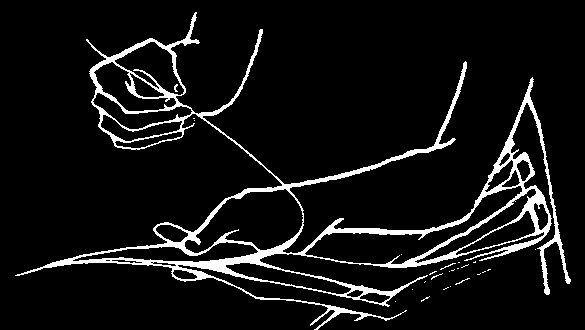


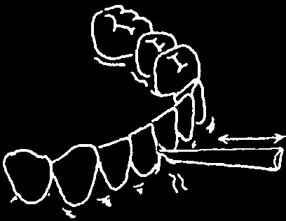

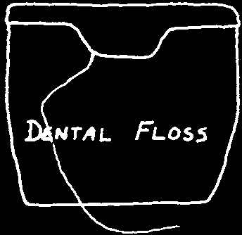
CLEANING BETWEEN THE TEETH IS VERY IMPORTANT
Here are three ways to clean between the teeth:
1. Push the hairs of a toothbrush between the teeth, and sweep the bits of food away.
2. Remove the stem from a palm leaf. Use the thinner end and move it gently in and out between the teeth.
Rub the stem against one tooth and then the other. This way, you clean the sides of both teeth.
3. Use some thin but strong thread or string. String can be the best method of all—but you must be careful with it.
Get some thin cotton rope
Buy and use dental floss.This used for fishing nets. Unwind
OR is a special kind of string for and use one strand of it.
cleaning between the teeth.
Be careful! The string can hurt your gums if you do not use it correctly.
The next page shows how to use the string, but the best way to Iearn how to 'floss’ your teeth is to have someone show you. Ask a dental worker who has experience.
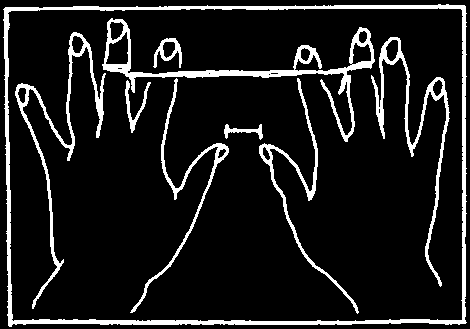

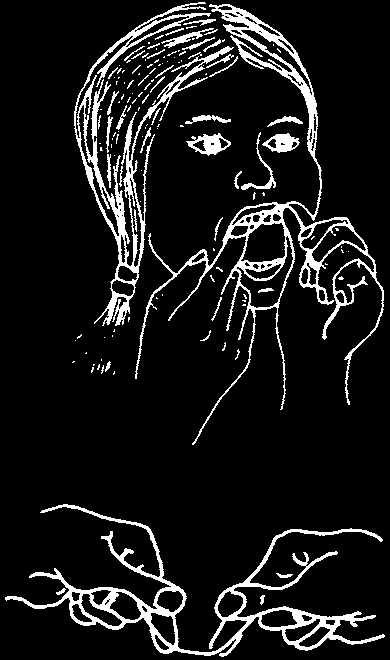